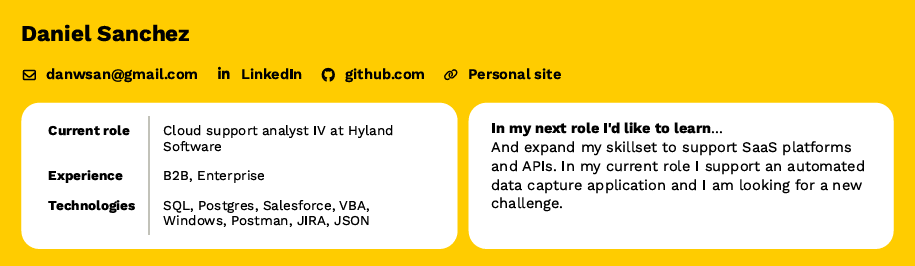

Hello, I'm Daniel Sanchez.
Technical Support Engineer, with 8 years of experience in software support.

Contact me!
danwsan@gmail.comAbout
Daniel Sanchez
I'm a Cloud Support Analyst IV at Hyland Software, with nearly 9 years of experience in B2B and Enterprise solutions. My technical expertise includes SQL, Salesforce, VBA, Windows, JIRA, Oracle, and Confluence.
I'm always eager to embrace new challenges. In my current role, I support an automated data capture application, but I'm driven to expand my skill set to include SaaS platforms and APIs.
Throughout my career, I've achieved promotions through consistent performance and contributions, and I take pride in spearheading documentation improvements, mentoring team members, and ensuring that customers receive top-notch support. I'm also enthusiastic about contributing to knowledge bases and enhancing the customer experience.
Beyond my professional life, I'm an active learner, currently diving into Python, HTML/CSS, Javascript, and Git/GitHub. I'm particularly drawn to the world of web applications.
When I'm not immersed in technology, you can find me indulging in my interests, which include PC gaming, a deep love for sports (especially football), and anything automotive-related, from racing to working on my classic car and attending car shows.
Resume
Projects
Fantasy Football Injury Tracker
One of my side projects is a Fantasy Football Injury Tracker, which I've partially completed. This project serves as a platform for me to enhance my Python skills while working with APIs and data. It leverages the Sleeper NFL fantasy football's open API to fetch data about my team's players and compiles a list of those who are currently injured.
The core technologies behind this project include Python, Flask/flask_SQLAlchemy, and SQLite. These tools enable me to work with the data efficiently and store the API response data. Flask is responsible for rendering an HTML template, displaying the injured players on my team in an simple, straightforward manner.
If you're interested in exploring this project or learning more about how it works, feel free to check it out on my GitHub repository.
You can also view the live project app hosted on Glitch